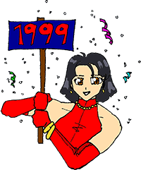

1999 What's New
Dec 30, 1999
Ok, it took a little longer than I thought, but new for today are several more new links, and an absolutely immense review of The Irresponsible Captain Tylor. Read at your own risk.
Dec 25, 1999
Added a half dozen new links today, and for those of you who submitted sites and are wondering what's up, we're working on it... Also, Makosuke, Akemi, and everybody else who helps with AAW would like to wish all our readers a very Merry Christmas, especially those who are reading this on computers they just got as gifts--have fun! New stuff coming tomorrow, and something bigger coming on 1/1/2000 (if anything still works).
Dec 21, 1999
Slightly updated, cleaned up, or spellchecked about two dozen of the reviews.
Dec 20, 1999
New reviews today for Queen Emeraldas (our new DVD pick) and Wild Cardz.
Dec 19, 1999
Sorry about the hiatus for the past couple of weeks, but education took precedence. A big apology to those who e-mailed us; we're digging through the backlog, and should be caught up very soon. There are about a hundred new reader comments scattered about and a new link or two, but look for a proper update tomorrow.
Dec 06, 1999
A rewritten Sol Bianca review, and a new review of Outlaw Star.
Nov 30, 1999
About a dozen slightly cleaned up reviews, and a partial rewrite of the Ghost in the Shell review today.
Nov 29, 1999
New screen caps to go with the Dragon Slayer review today.
Nov 25, 1999
Happy Thanksgiving to our American readers, and there's plenty going on at AAW today: First off, we've slightly changed the layout of all the review pages, adding a spot of color. Tell us what you think, if you feel the urge.
Second, we've just partnered up with a new site, AnimeExtreme; our reviews will be dual-published with them, and I recommend them for daily anime news. (and don't worry--nothing will be changing here.)
Third, the older, shorter format reviews are slowly being revised; so far we've got somewhat updated reviews for Angel Cop, Ayane's High Kick, Baoh, and Battle Athletes.
There's also a completely new review for a surprisingly fun video, Dragon Slayer (our anime pick). Plus, there is a new set of pictures for Kite, and, finally, there are several new links scattered about.
Nov 18, 1999
After a long dry spell, we have an updated Sakura Wars review, and a cursory new review of Princess Mononoke.
Nov 07, 1999
New review by Kayote for the El Hazard OAVs. Also over a dozen new links scattered about (we now have over 600), and a few other touch ups.
Oct 30, 1999
A new review today of Kite, which is our 100th review. We don't do much self-horn tooting here, but coincidentally, yesterday we hit the 100,000 visitor mark for the site (that's unique daily visitors, for those wondering--the counter doesn't go up if you reload or come back later in the same day). A hearty thank you to all our regualr readers.
Oct 27, 1999
Added a new review for that old splatterfest favorite, Fist of the North Star. Also updated the Top 10s, and added screencaps and a more thourough review of Dirty Pair Flash.
Oct 20, 1999
Screen caps added for Panzer Dragoon and Tokyo Vice.
Oct 19, 1999
Missed the weekend, but a new review today for the Earthian series. Also added a cover scan to the Tenchi Forever review.
Oct 14, 1999
Added a long review of the just released final Tenchi installment, Tenchi Forever: Tenchi Muyo in Love 2. To go with it, we also added the song lyrics to the first Tenchi TV series opening/end themes, and the opening/two end themes from the OAVs, but the titles/performers haven't been added quite yet.
Oct 11, 1999
Added the song lyrics (transcribed from the subtitles) of Haunted Junction.
Oct 10, 1999
New reviews for a really bad short, Panzer Dragoon, and a so-so cyberpunk oldie, Tokyo Vice.
Oct 08, 1999
A new review today for a great shoujo series, Revolutionary Girl Utena.
Oct 05, 1999
Yet more links added--about a dozen scattered about.
Oct 04, 1999
About a half a dozen new links scattered about, and some other minor touch-ups around the site.
Sep 29, 1999
Very sorry about the delay, but we now have new reviews of the Kimagure Orange Road TV Series, OAVs, and the first Movie, as well as an overview page for the whole KOR series.
Sep 26, 1999
AARRGH! It seems that somebody hacked our host's computers and brought AAW down for a good part of the last couple of days. The problem has apparently been dealt with, but we apologize for the temporary disappearance, and we still aren't able to get to any e-mail (and haven't been able to for a while now). We'll keep you posted, and there are several new reviews on the way later tonight.
Sep 20, 1999
Somebody asked for Dominion pics, and although it may have taken a while, we have now added way too many dominion screen caps to that review.
Sep 19, 1999
New pics and cover for the review of Serial Experiments Lain (also updated the review a little, making it even longer than it was). More new pics coming later tonight.
Sep 15, 1999
Added a crosslinked cast to the Haunted Junction review.
Sep 13, 1999
New screen shots of Ninja Resurrection.
Sep 12, 1999
Spent the night working through a huge backlog of e-mail/reader submissions, and as a result we've got quite a few new links scattered about, and many new reader comments. Look for some new pics tomorrow.
Sep 05, 1999
Well, it's been almost two weeks since our last update, and I can only offer my most humble apologies--the school semester just started, and... Actually, we have a little more than just "gomen" to offer--we have a new review of Ninja Resurrection and a buncha screen caps from Haunted Junction. As for the future, there should be at least one weekend update, and maybe one midweek, every week from now on.
Aug 24, 1999
It's link day! New link sections for Dominion and Sorcerer Hunters, and many new links scattered throughout the links section. The whole section has also been slightly reformatted, and now includes info on how many links each page has, when it was last updated, and there's now a form to add a link for a series we don't have a section on yet. If you haven't checked that section out recently, you might want to take a look--there are over 550 links in 50 categories now.
Aug 20, 1999
A long new review of a very different anime TV series, Serial Experiments Lain.
Aug 18, 1999
A new review, with pictures and cast on the way, for Haunted Junction.
Aug 15, 1999
A few minor touch ups, and added the cross-linked cast to Agent Aika.
Aug 10, 1999
Many apologies for the lack of updates this weekend. We've got a new review and images for a rather low-quality flick, Cybernetics Guardian, and we're working on a minor update to the format of the site; everything here will stay, but there will be some extra information, and it should be a tad easier to get around. It may take a little while to get it finished, but it will (hopefully) be worth the wait, and there will be reviews of Ninja Resurrection and Haunted Junction coming later in the week.
Aug 03, 1999
New info on the DVDs, as well as rewritten reviews, for Project A-ko and the Tenchi Muyo OAVs.
Jul 31, 1999
As promised, new screen caps added for all three new reviews: Special Duty Combat Unit: Shinesman, Ninja Cadets, and Agent Aika.
Jul 29, 1999
Slow lately, but we'll make it up. Three full new reviews today, with pictures (and more) for each to follow in a day or two. We have: A somewhat silly ninja show, Ninja Cadets, A really sleazy action series, Agent Aika, and one of the funnies parodies I've seen to date, even if you've never heard of it: Special Duty Combat Unit: Shinesman (our current, and well deserved, highlite). Oh, and we've also added an ad (nice ring to that) banner at the bottom of this page (don't worry, it's not part of a trend).
Jul 24, 1999
Another illustration added to the new lesson in How to Draw Anime Style Art, for clairification.
Jul 23, 1999
Bit slow, but about to remedy that: We have just added and cross-referenced the Japanese credits of Maps (and added a couple of voice actors to that section with it). And, check out Lesson 2: Body Proportion in the How to Draw Anime Style Art section.
Jul 18, 1999
A new review today, with images, for Sorcerer Hunters.
Jul 17, 1999
Several new links today, and song lyrics (with some translation) for Birdy the Mighty, to fill out that section.
Jul 12, 1999
New today is the cast of Birdy the Mighty, personally translated by Akemi and fully cross-referenced with our cast index. Also several new links.
Jul 11, 1999
Today we've added new images to go with the Tekken Tekken: The Motion Picture review, as well as the box art; also added cover images to both Sol Bianca reviews. Look for a new review of Sorcerer Hunters (as well as some other stuff) in a few days.
Jul 07, 1999
Lots of new pictures from Birdy the Mighty added today.
Jul 05, 1999
A new review today for Birdy the Mighty, with pictures on the way in a day or two.
Mini poll results: 75% prefer longer reviews, 25% shorter--thanks for the input, and as a result we'll be sticking to the longer format.
Jul 03, 1999
New images today for the first Sol Bianca; we moved the mini-poll up above, and will leave it up for the rest of the day.
Jul 02, 1999
Very small update today. Even though it's really short, we added the song lyrics (and a translation) of the Grappler Baki end theme; We're also trying a little mini-poll.
And a note: For some reason, I have been unable to send e-mail to some AOL addresses; not all of them, but several keep bouncing back with "not accepting mail from that address" errors. If you've written to us from an AOL address and haven't gotten a response, we're really sorry, but we don't have any way of responding. If I do figure anything out, though, you'll hear from us.
Jun 30, 1999
Two new (and really long) reviews today: one of an older semi-deep action flick, Sol Bianca 2, and one of a newer semi deep action flick, Tekken: The Motion Picture. They're our anime pick and DVD pick, respectively.
Jun 29, 1999
Added cover picts to the reviews of Grappler Baki and Dominion: Tank Police, and added a product matrix to the latter.
Jun 28, 1999
Added some screen shots and the dub cast/crew to the Grappler Baki review.
Jun 27, 1999
A couple of new links and a new review for Grappler Baki. That's (perhaps unfortunately) our 80th review, by the way. Pictures of that one coming tomorrow.
Jun 25, 1999
We've added a new section to the info area today, Featured Reader Reviews. They are some of the more interesting reader submitted comments we get; they will be linked directly from the main reviews (always good to get a second opinion, after all), as well as available in the info area. And don't worry, the rest of the reader comments will still be there, of course. (By the way, we got our 300th reader submitted review this past week, so we'd like to offer a big thanks to everybody who took the time to send their thoughts--keep em' coming!)
Jun 24, 1999
Gomen! You may be wondering why it's been so long since the last AAW update (no, it wasn't lazyness or a terrorist attack); the excuse is "Norton Utilities ate my B-Tree!" Seriously, a routine hard drive maintanance run last weekend turned into a long ordeal of desparately trying to recover 4 gigs of (infrequetnly backed up) data. [Let this be a cautionary note to all you backupless, devil-may-care type folks--it sure put the fear of God into me.] Anyway, I'm finally back online and all my files (most importantly, of course, the offline AAW storage) have been rescued. Regular updates will resume immedately, and we'll try to make it up to you readers; also, if you wrote to us in the last few days, we'll get to it as soon as possible. Look for new stuff tomorrow night, and my most humble apologies!
Jun 20, 1999
Several new links in assorted sections added today.
Jun 15, 1999
A new review today for the old classic Dominion: Tank Police, given new life as a DVD.
Jun 13, 1999
A new review and plenty of pictures of Sakura Wars.
Jun 09, 1999
At the request of some readers, our artist has put together some tips on How to Draw Anime Style Art. The first part, faces, is up, and more will follow as he finishes them.
Jun 06, 1999
Added lots of screen caps to go with the review of Macross II.
Jun 05, 1999
Finally have the song lyrics to the Maps theme up. Also new for today is a review of Macross II.
Jun 04, 1999
A little slow this week, but we have many new links today, in and a whole new links section, by request, for Escaflowne.
May 30, 1999
Added an English translation (done by Akemi herself) of the lyrics for the end theme of the 2nd Tenchi Muyo Movie.
May 28, 1999
A big heap of new links today, including a new section for Oh My Goddess!. Also a new review (with pictures, and song lyrics coming in a day or two) of Maps (in case Episode I wasn't enough space action for you).
May 27, 1999
Updated the review, added pictures, a cross-referenced cast list, more DVD info, and the song lyrics to the end theme of the Tenchi Movie 2 review.
May 23, 1999
New and cross referenced casts for Iria: Zeiram the Animation, Devil Hunter Yohko, and Oh My Goddess!.
May 22, 1999
Several new links today, scattered throughout the links section..
May 18, 1999
Yet more conversions, and a properly cross-indexed cast added to Battle Royale High School.
May 17, 1999
More reviews converted to the (drum roll...) Product Matrix (dramatic music). Other updates are a couple of new cover pictures and a fully cross-referenced cast list for Gunnm.
May 16, 1999
New for today is a review of Devil Hunter Yohko, but if you pop down to the "availability" section of that review, you'll see our brand-spankin' new (drum roll...) product matrix. Ok, so it sounds cooler than it is, but it's a more informative way to see what's available in what format. They've been added to some of the past reviews, and the rest will be finished soon.
May 15, 1999
Finals are over and we're back in business! Lots of new stuff coming later this weekend (and beyond), but for the time being we've got a few new links, we've updated the DVD list somewhat, and added 20 or so new reader comments.
May 10, 1999
Things have been slow this week due to the dreaded finals, but we'll make up for it next weekend. A few new pictures for Dark Warrior today (hey, it's better than nothing). Also updated two reviews: Oh My Goddess!, with some info on the dub, and Battle Athletes, to reflect all three volumes in the series. (And Happy belated Mother's Day to all the moms out there!)
May 03, 1999
New reviews today for Oh My Goddess!, a classic anime love comedy, and Dark Warrior, a series of considerably lower quality.
Apr 28, 1999
Some new pictures to go with the review of Suikoden.
Apr 27, 1999
A couple of new links today, and we've added a page for links to sites that have linked to us (it's the only place at AAW where you'll find any banners. Also new today is a review of Suikoden - Demon Century.
Apr 24, 1999
A new review today for The Dagger of Kamui, one of the all time anime classics (and hence our new anime highlight). We also have a few new links scattered around the links section.
Apr 21, 1999
More songs: Fairy Dreaming, from Genocyber, and both the opening and end themes of Gunbuster. Also added "Song Lyrics" to the main menu choices.
Apr 20, 1999
Akemi's been hard at work correction and translating the song lyrics at the site. To begin with, we now have the full version of the Tenchi in Tokyo opening and ending song, along with full translations of both.
Apr 17, 1999
It's link day! New links today for Fatal Fury as well as some new links to Ranma 1/2 pages, plus a whole slew of new links scattered throughout the links pages.
Apr 15, 1999
Some new images to go with the review of Space Adventure Cobra, and a few new links.
Apr 12, 1999
A few new links, many, many new reader reviews, and a new review of the retro action-fest Space Adventure Cobra.
Apr 10, 1999
Sorry again about the recent lack of updates. There will hopefully be some new stuff up this weekend. In the mean time, we've got a new review of the first Slayers TV series by Kayote, and a few new links, plus several minor corrections around the site.
Apr 03, 1999
Lots going on at AAW! We have a new reviewer, Brian Hinnant (you'll be able to read his reviews in a few days). We've put up an editorial he wrote to introduce himself, and we'll be adding ones by the other reviewers. And, being that he starred in the dub of Baoh, we've also done a little interview with him about the dubbing process. Check them both out in the Editorials/Interviews section! Also new today is a review of Fatal Fury, complete with screen shots and even the lyrics of the end theme.
Mar 29, 1999
Sorry about the recent lack of updates. Today we have a new sort of "franchise overview" of the Tenchi Muyo series; this one is kind of a test, and more may follow. We also have a little review (due to reader request) of that old classic, Vampire Hunter D. Also some new links (including a few for Tenchi Muyo, and a few formatting updates around the site, including that little menu under the title graphic up above, and the renaming of the Essay section to "Editorials"; no new content, but that name seems to make more sense.
Mar 23, 1999
Many new links today: lots of You're Under Arrest links, an assortment of other links, plus a new links page for MP3 sites.
Mar 21, 1999
Have finished filling out the Tenchi in Tokyo review; it now includes the cast (cross linked), the lyrics to the opening and end songs (and those weren't easy to transcribe), and a few too many pictures. There are also a number of minor formatting updates throughout the site, mostly to fix some display glitches with iCab (a new Mac browser from Germany).
Mar 20, 1999
New today is the American Anime Company Info page. The name is kinda long, but what it is is some general information about the major American anime companies. If you're interested in some general background about the people who bring you anime...
Mar 18, 1999
A new review today for Tenchi in Tokyo, plus new cover scans for several videos: Tokyo Babylon, both Tenchi Movies, both Ranma movies, Ghost in the Shell, Ninja Scroll, and Armitage III: Poly Matrix. There's also a little sketch of the site's creators on the About AAW page, if you were wondering what they look like.
Mar 17, 1999
Finished proper cross-indexing of the cast of Battle Athletes, and added about 5 new actors to the cast index to go with it, bringing the total up to 170. Also a new KOR link.
Mar 16, 1999
Cross referenced the cast of Venus Wars, and have new screen captures of Plastic Little.
Mar 15, 1999
Have finally completed the major overhaul of the cast index; you can now find most of the well known Seiyu (and lots of more obscure folks), along with the anime they've appeared in and the roles they've played. We're now working on cross-indexing everything. So far, Project A-ko, Battle Arena Toshinden, Tenchi Muyo Movie 1, and Plastic Little are done. Also have added the cast of Armitage III and the song lyrics of "You are Everything", the end theme of Plasitc Litte (and one of my personal favoites).
Mar 12, 1999
Aplolgies for the lack of recent updates (this week was midterms...) We do have a new essay, "In Defence of Dubbed Anime", by Lee Ratner, a counterpoint to the pro-sub essay. Also one minor layout change: the "Reviews" index has been moved from the Goodies section up to the Info section, where it fits in better.
Mar 10, 1999
A few new links around the site, including a new links section for Events (if you have an upcoming Con or other event, tell us!), an a new links page for Battle Athletes.
Mar 07, 1999
A through new review today for Battle Athletes, including lots of images, the cast, and lyrics for the end theme (in both languages).
Mar 03, 1999
New links today for Tokyo Babylon, Dragon Half, and lots for Iria: Zeiram the Animation.
Feb 28, 1999
A new review of a fine piece of anime, Tokyo Babylon.
Feb 25, 1999
Some minor updates around the site, and a (small) new section, with a couple of song lyrics (the only place on the net, to my knowledge, that you can find a translation of the lyrics of "Tears and Rain", the Green Legend Ran end theme).
Feb 24, 1999
A new review today for Dragon Half (ok, so it's not the deepest movie ever made), along with new images for both Dragon Half and Baoh.
Feb 21, 1999
Unfortunately, nothing big this weekend, but more odds and ends, a new review for Baoh, several new links scattered throughout the series pages, moved that Dreamhost button up above (hope no one minds), and the new improved Cast Index is now done through "I"...
Feb 17, 1999
Odds and ends around the site today, and the beginnings of the new, more comprehensive cast index. It's only about 1/10th done, but it's up for testing, and will be filled out over the next week or so.
Feb 13, 1999
New pictures today for Iria: Zeiram the Animation.
Feb 08, 1999
Some new pictures of Ghost in the Shell today.
Feb 07, 1999
New today is a very long winded review of Bubblegum Crisis.
Feb 05, 1999
New reviews today for two films at opposite ends of the anime spectrum, Grave of the Fireflies and The Ultimate Teacher, which are also our new (and very belated) picks of the week. There are also a number of minor updates and cleanups thoughout the site, as well as a couple of updated links.
Feb 03, 1999
Apologies! Most of the images on the site weren't working for most of today--the FTP program went berzerk and did a number on one of the directories, and I didn't notice it until later in the day. Everything should be fixed now, though... On the positive site, several new links scattered throughout the site, as well as more of those new menus at the top of the reviews pages (getting close to done). Finally, an archive of the old "What's New" updates has been added (at the bottom of this list).
Feb 01, 1999
New links today for Gunnm and Gunbuster. We've also started adding a little menu to the review pages; some (inclulding those two) are done, and the rest will follow soon...
Jan 27, 1999
New today are links for the Dirty Pair, which is the 30th series we have links for, and to celebrate, we've cleaned up the organization in the links section. Also new today are some screen shots of Battle Arena Toshinden.
Jan 26, 1999
Sorry about the recent lack of updates; school just started, but once the semester gets underway, more updates will be forthcoming. The only thing new today is a new AAW banner in the links section (nothing to write home about, but it's there if you want to link to us).
Jan 23, 1999
More broken links fixed (the Ayane's High Kick submit review works now, and you can get to the VOTOMS reviews from the indexes). Also, some pictures for Spirit of Wonder (as well as a link to another site and the cast/credits), and some links for Kiki's Delivery Service.
Jan 18, 1999
A couple of minor broken-link fixes around the site, another voice actor added to the cast index (Sakuma Rei, aka Shampoo, aka Morrigan), and new picks of the week (below).
Jan 17, 1999
Apologies for the lack of updates recently. We've got several new pictures for Venus Wars today, and new reviews of Kiki's Delivery Service, Spirit of Wonder, and Angel Cop. The review list page has also been reformatted and properly alphabetized, and there are a couple of additions to the cast index.
Jan 12, 1999
New links today for Kimagure Orange Road, as well as a handful of new links scattered throughout the general sections.
Jan 10, 1999
A new (and long winded) review and lots of pictures of Gunbuster, our pick of the week, as well as half a dozen or so new cover pictures scattered around the reviews.
Jan 09, 1999
Some new screen shots for Peacock King: Spirit Warrior, and more updates coming throughout the weekend.
Jan 06, 1999
Sorry for the lack of updates the last few days--our main writer has been called to serve his country (jury duty), and so has been indisposed. Regular operation will resume this weekend. Until then, we have new reviews for two of the Peacock King movies: Peacock King: Spirit Warrior, and Peacock King - Castle of Illusion.
Jan 02, 1999
Gomen! Due to some kind of problem with our host, the animeworld.com domain wasn't working for a good part of the day. It seems to be fixed now, and hopefully it won't happen again. As an apology, we have new links for a bunch of series: Project A-Ko, Ninja Scroll, VOTOMS, Sol Bianca, Night Warriors, and Vampire Princess Miyu. Check 'em all out in the links section. There will also be more stuff coming durning the night... And it's here. There is a new review of Venus Wars up.
Jan 01, 1999

Happy New Year! New to celebrate the new year: New links for Akira and Battle Arena Toshinden. Also, a new review for The Legend of Lemnear (though not a flattering one). And, finally, you can now submit your own review for any series listed at AAW.
But... big news today is AnimeWorld.org, a new project by the creators of AAW. At AnimeWorld.org (you can guess the URL), you can get your own web frontpage with an address like "http://animeworld.org/animefan/". Check it out!